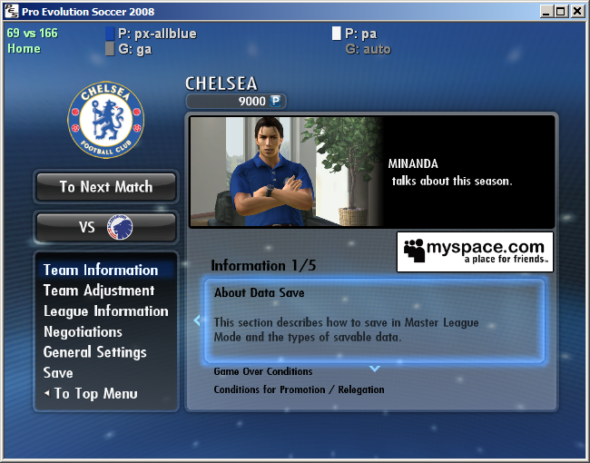
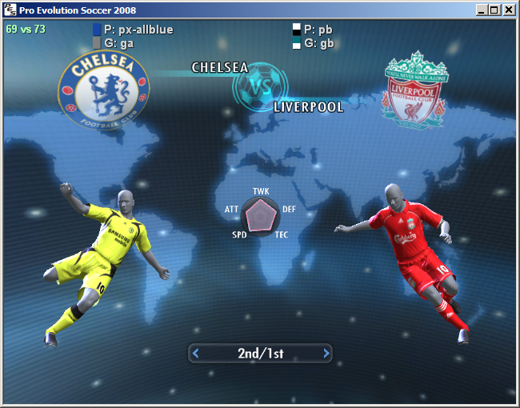
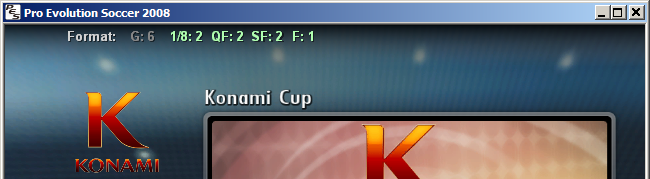

Kitserver 7 Manual
June 18, 2008 - Kitserver 7.2.0
1. Introduction
Kitserver 7 is an add-on program for Pro Evolution Soccer 2008. It is a loader and manager for various modules.
Below is a quck summary of the available features. Follow the link in the left column to get more details about a particular module.
| Kserv 7.2.0 |
kserv.dll |
Assign kits to all teams (no re-linking needed), Extra (3rd,4th,etc.) kits. Allows selection of kits in all game modes: Exhbition, Cup, League, Master League. |
|---|
| LOD Mixer 7.1.0 |
lodmixer.dll |
Various tweaks to graphics and game options:
Select quality levels which PES doesn't want you to choose;
Any window resolution supported, hidden fullscreen resolutions unlocked;
Manual/Automatic aspect ratio correction;
Disable controller check for Master League/League/Cup games: this allows your
friend to play for the opposition team.
|
|---|
| AFS2FS 7.2.0 |
afs2fs.dll |
Manage AFS (.img) game content using files and folders: much easier and quicker to install/remove patches, without the need modify *.img files |
|---|
| Faceserver 7.2.0 |
fserv.dll |
Assign special face/hair for any player. |
|---|
| Scheduler 7.2.0 |
sched.dll |
Make changes to Konami Cup tournaments: now possible to play Home/Away matches in the groups, and also have Home/Away knock-out stages - ala UEFA Champions League |
|---|
| Read/Write data 7.2.0 |
rwdata.dll |
Manage your edit and system data. Useful for patchmakers - to keep all things in one place and have the ability to keep the original PES2008_EDIT01.bin and PES2008_OPTION01.bin unchanged. |
|---|
2. Installation / Removal
As with previous version of Kitserver, you have to unpack the archive to your PES installation
folder. It should look like this:
 Then go to kitserver folder and run the setup.exe. What is new is that you can now also select your
settings.exe. This is necessary because some changes are only possible in that
file. simply select these both files (they should already be preselected) and
click "Install". If you choose that you don't want to use Kitserver any longer,
run setup.exe again and click "Remove". You can also install/remove Kitserver
only for one exe by setting the other one to "no action".
Then go to kitserver folder and run the setup.exe. What is new is that you can now also select your
settings.exe. This is necessary because some changes are only possible in that
file. simply select these both files (they should already be preselected) and
click "Install". If you choose that you don't want to use Kitserver any longer,
run setup.exe again and click "Remove". You can also install/remove Kitserver
only for one exe by setting the other one to "no action".

3. Usage and configuration
3.1. Running settings.exe
After installing Kitserver, if you run settings.exe from your game main folder, you are asked if you want to enable all quality
levels. In PES2008, Konami doesn't allow you to choose a high quality level if
the game thinks your PC isn't good enough for that. If you click on "Yes", that
check is removed and you can try if they are right with their assumption.
Apart from that you can now choose 4 controllers in the "Controller" tab. That
means you can configure your gamepads here and later play with them. Note that
by default the keyboard is controller #1. If you setup your gamepad as first
controller, you can't play against someone using the keyboard and your gamepad.
For that, you shouldn't setup a gamepad as first controller but always as #2, #3
or #4. However you can't use your gamepad in the main menu then, that works only
with the first controller.
3.2. Main configuration file: config.txt
In the kitserver folder, there is the program's main configuration file - config.txt. This is where you would need to make changes to enable/disable individual modules (DLLs), and/or configure module settings.
Here's how my config.txt looks like:
[afsio]
debug = 0
[fserv]
online.enabled = 0
[kload]
debug = 0
dll = zlib1.dll
dll = libpng13.dll
dll = lodmixer.dll
dll = kserv.dll
dll = afsio.dll
dll = fserv.dll
dll = afs2fs.dll
dll = sched.dll
dll = rwdata.dll
[lodmixer]
aspect-ratio.correction.enabled = 1
controller.check.enabled = 1
[rwdata]
debug = 1
edit.data = edit.bin
#system.data = "c:\data-files\option.bin"
Each module can have its own configuration section, which starts with [module-name], and typically has one or more options following it. Now, normally you wouldn't need to modify config.txt file, except for the cases, when you need to modify the behaviour of a particular module (DLL), or enable/disable such DLL. For example: rwdata module reads the "edit.data" and "system.data" settings from config.txt - check rwdata section for more details on this.
To disable a particular module - just comment out the corresponding line in the [kload] section. (Or you can delete that line altogether.)
The order of the DLLs is important. In particular: zlib1.dll, libpng13.dll must be loaded in that order before kserv.dll; also afsio.dll must be loaded before fserv.dll and afs2fs.dll
Top
4. Kserv Module (kserv.dll)
Kserv module is responsible for serving kits from the GDB ("Game content DataBase") during the game. The main feature of it is that you are not limited to the slots that cv_0.img has for the kits, and you can assign a kit to any team. With Kserv and GDB, it is also possible for the teams to have more than 2 kits: so instead of just a standard pair of 1st and 2nd, you can have a potentially unlimited set of alternative uniforms for playing in European cups, or special exhibition games and so for. In real life, typically a team has a wide selection of kit variations. By organizing your kits in the GDB, it is possible to achieve that.
Kserv was historically the first module implemented in the original Kitserver program, made for PES3. That's where the Kitserver name originated from. Later, as more functionality were introduced as new modules, to avoid confusion, we changed the name of the module that serves kits to kserv, while Kitserver name now refers to the entire program.
4.1 GDB organization
The GDB contains a folder named uni, which is responsible for storing
the team kits (uniforms). The single most important file inside uni is called map.txt.
This file tells kitserver where to find the kits for particular team. As you know, each team
has a unique id - a integer number from 0 to 203, i think. So
for every team in the GDB, you must specify in the map.txt, where the kits are for this team.
Here is an example:
# This config maps team number into folder name
# Format: <team-num>,"<folder name>"
# Example: 21,"Russia"
21,"National\Russia"
69,"EPL\Chelsea"
73,"EPL\Liverpool"
IMPORTANT: Double quotes are not required, but advised - just so that there is no ambiguity about
folder name. For IDs for all the teams - see
uni.txt file
Please note that the sample GDB (provided with kitserver) is just one possible way of organizing the teams and
folders. It uses "EPL" folder to group all english teams, "National" - to group all national
teams, and so for. You may find that you just prefer a flat list of folders - without these
extra groups. In that case, just modify the map.txt file accordingly, and create
the structure of folders that you prefer. That's the main advantage of having map.txt - the
flexibility of kit organization.
You can see from map.txt above that in order to find a kit for team #69, the kitserver needs to go to the
folder GDB\uni\EPL\Chelsea. This folder will contain all of the kits that are
available to team #69. Inside it, you must create an individual folder for each kit. Like this:
 For players, 1st kit must have a folder name pa, 2nd - pb. Extra kits can have
any folder names that start with letter "p". I found it useful to prefix all extra kits with
px-. For example, px-blue. For the goalkeepers, 1st kit must be in the folder
ga, 2nd - in the gb. Extra kits can have any folder names that start with letter "g".
For players, 1st kit must have a folder name pa, 2nd - pb. Extra kits can have
any folder names that start with letter "p". I found it useful to prefix all extra kits with
px-. For example, px-blue. For the goalkeepers, 1st kit must be in the folder
ga, 2nd - in the gb. Extra kits can have any folder names that start with letter "g".
IMPORTANT: Folder name acts as a kind of ID for kitserver, which puts the
additional restriction on all those folder names: they cannot contain spaces, and preferably
they should be relatively short, and in English,French or other language withing Latin1
(iso8859-1) character set. Typically, if you want to make sure kitserver can properly
find/read the folder, just use latin characters, digits, underscore, and the dash (minus sign).
Now let's move on inside one of the kit folders. Take pa, for example.
 See the table below for explanation of each file:
See the table below for explanation of each file:
Images must be in PNG format: 8-bit paletted or 4-bit paletted (those may be used with fonts/numbers). So the filename must have
a ".png" extension.
| Reserved file name | Meaning | Format |
|---|
| kit.png | Kit texture |
512x512 8-bit paletted image in PNG format.
|
| font.png | Font texture: used for names on the back of the shirt |
512x128 8-bit or 4-bit paletted image in PNG format. |
| numbers-back.png | Numbers texture: used for (big) numbers on the back of the shirt |
512x256 8-bit or 4-bit paletted image in PNG format. |
| numbers-front.png | Numbers texture: used for smaller front numbers |
256x128 8-bit or 4-bit paletted image in PNG format. |
| numbers-shorts.png | Numbers texture: used for numbers on shorts |
256x128 8-bit or 4-bit paletted image in PNG format. |
| config.txt | Kit attribute configuration file (see next section for more details) |
text file (in UTF-8 encoding) |
IMPORTANT NOTE TO KITMAKERS:
BMP kits are no longer supported, please use PNG format instead.
4.2. config.txt
This is the attribute configuration file.
As before, it is just a plain text file - you can use Notepad or any other text editor to
view or modify it. For each folder, you should have a config.txt file in it.
Here's the summary table of all the supported attributes:
| Attribute name | Meaning | Format | Example |
|---|
| model |
identifier for 3D-model of the shirt |
decimal integer |
model = 37 |
| collar |
Collar-type |
0/1/2/3 (0=yes, 1=no) |
collar = 0 |
| shirt.number.location |
Where on the front of the shirt the number should be placed. ("off" means the number
will not be displayed at all.) This only applies to national teams.
|
center|topright|off |
shirt.number.location = topright |
| shorts.number.location |
Where on the shorts the number should be placed. ("off" means the number
will not be displayed at all.)
|
left|right|off |
shorts.number.location = left |
| name.location |
Where on the shirt the name of the player should be placed. This is useful
for teams like Boca Juniors, who have player names printed at the bottom of the
shirt. ("off" means the name will not be displayed at all.) |
top|bottom|off |
name.location = top |
| logo.location |
Where on the shirt the sponsor logo should be placed. (This attribute
is probably not gonna be very useful with kitserver, since if the
team has the logo on the back of the shirt, it will probably be painted
as part of the kit texture itself, by kitmaker) |
top|bottom|off |
logo.location = off |
| name.shape |
Indicates whether the name should be curved or straight. The values
have the same meaning as in Edit Mode: type1 - straight, type2 - slightly curved,
type3 - curved, type4 - even more curved. |
type1|type2|type3|type4 |
name.shape = type1 |
main.color
( radar.color ) |
This attribute specifies the main color of the shirt. It is also used as the color of the players on radar screen. It also influences the kit that is selected by default. (The old name "radar.color" is also supported for backwards compatibility) |
color, written in hexadecimal format RRGGBB (red,green,blue) |
main.color = 0A5D88
radar.color = 0A5D88 |
| shorts.color |
This attribute specifies the color of the player/gk shorts. The color
of shorts is used by the game to determine correct color of the underpants
for those players who wear them, and have them set to match the shorts
color. |
color, written in hexadecimal format RRGGBB (red,green,blue) |
shorts.color = 0A5D88 |
| description |
Any notes about the kit. This text will be displayed on
kit selection screen, under the mini-kit. Useful when there are
several similar kits that have near identical mini-kit rendering
but you want to know which one is currently selected. |
any text in double quotes |
description = "All white (WC2006 Final)" |
4.4 Kit Selection
In order to provide a visual reference for currently selected GDB kits (including extra kits), Kitserver uses a Kit Selection Overlay, located at the top of your screen - see the image below. The top left corner indicates the team IDs (69 vs 73), and in case of Master League, there's also a Home or Away text, showing whether your team is player at home or away. In the center of the screen, the two sections represent the kit selection for the Home team (left side) and the Away team (right side). Initially, the kit selection is set to P: auto and G: auto, meaning that kitserver lets the game choose the player and goalkeeper kits. You can change that by pressing the following keys on the keyboard:
- [1] - Switch home player kit
- [2] - Switch away player kit
- [3] - Switch home goalkeeper kit
- [4] - Switch away goalkeeper kit
By repeatedly pressing the keys, you will cycle through all of the kits available in the GDB for the chosen teams. So, if for example, you have 5 different kits, you can choose any of them, and not just the pa and pb. The screenshot shows Chelsea selected the px-allblue alternative kit:

The colored rectangles indicate the "overall" colors of the shirts and shorts selected. This information is retrieved from main.color(radar.color) and shorts.color kit attributes in config.txt file - if the kit is from GDB; or from the game data, if the kit is from AFS (cv_0.img). If you don't define those attributes in your GDB kits, then you won't see the colored boxes.
It is also possible to choose extra (3rd,4th,5th,etc.) kits in the Exhibition Mode. At the top of the screen, you will also see the Kit Selection Overlay - like in Cup modes.
Please note that currently, kitserver cannot change the kits on the rotating figures of the players. So the visual indicators are a little bit misleading in that regard. For example, on the screenshot below, the players are wearing yellow and red kits, even though the Kit Selection Overlay shows blue and white/black uniforms selected:

However, once the match starts, the kitsever will make sure the teams are wearing the kits chosen in Kit Selection Overlay at the top, and not necessarily the ones on the rotating player figures. In the future releases, i'll try to make it so that the rotating figures also change their kits dynamically, as you press the [1], [2], [3], [4] keys.
Top
5. LOD Mixer (lodmixer.dll)
LOD-Mixer is the module that allows to fine-tune some aspects of PES2008 graphics engine.
Currently the following features are implemented: screen resolution, aspect ratio correction,
and LOD adjustment. All of these can be configured manually in kitserver's main
configuration file (kitserver/config.txt), but also there is now a GUI program that
makes it even easier:

5.1. Aspect Ratio.
PES2008 offers only two choices for aspect ratio - 4:3 and 16:9. However, lots of
LCD monitors don't exactly fit into either of those. Often, a 16:10 ratio is
used, or even 16:9.6. This results in the picture being distored: players either
too fat or too skinny, and ball is not round.
With LOD Mixer, you can set the aspect ratio to whatever you want. Either let
LOD Mixer calculate it automatically - at run-time, using the current screen
width and height in pixels - or set the value manually. Automatic way would work quite
accurately, assuming the pixel is square. Sometimes, however, you would want to
set it manually. For example, i play on widescreen monitor, but using a 800x600
resolution, because my video card is not powerful enough. The automatic
calculation would give 4:3, but since the view is stretched to fill the entire
screen, we need to account for that. Setting aspect ratio to 1.6 (which is a
natural AR for my laptop) does the trick.
5.2. Screen Resolution.
You can set any screen resolution you want, if you play in a Windowed mode. Even
crazy screens like 1567x532 will work, but you're likely to suffer from
performance problems on such cases.
Hidden fullscreen resolutions are fully unlocked now as well. However, only those
that your video card really supports in full-screen mode, will work. If you
accidently choose an unsupported fullscreen resolution, then PES should still
be able to start in a window.
5.3. LOD configuration.
LOD (Level-Of-Detail) algorithms are used in graphics engines to improve both
the picture quality and the speed of rendering, when drawing objects at various
distances from the viewer. The basic idea is that when the object is close to
the camera, one (very detailed) model is used. When it is far - another, simpler
model with less detail is used instead. It's much faster to render a low-poly
model of the object, and it typically looks better, when drawn in small size,
because it suffers less from aliasing. In theory, at least,
that is how it is supposed to work.
For some inexplicable reason, PES series had always suffered from an overly-
conservative LOD configuration, where the switch to low-poly models would happen
way too soon, and that would result in various visible artifacts. In PES4-PES6,
examples were: balding players, and missing details on kits. In PES2008, the
players appear to have blurred generic faces, once they move slightly away from
the camera.
So, if you have a good PC and a fancy videocard with GPU cycles to spare, you
may fancy tunning the LOD sligtly to make the game engine display more detailed
models, even when they players are a bit away from the camera (Animation quality seems
to be affected by this as well). To do that, move the sliders to the right.
Also, if on the contrary, your machine is stuggling to run the game at a smooth
frame rate, you can try tunning the LOD sliders in the opposite direction - thus
making the engine switch to the low-poly models sooner than normal. This may
improve the framerate, although at the expense of picture quality. To achieve
that, move the sliders to the left.
Note that in game versions 1.0 and 1.10, the second LOD slider had the default
value of 0.070. In version 1.20, KONAMI had changed this value slightly
and it is now 0.074, which makes the game switch from LOD1 to LOD2
a tiny bit sooner than before (if default LOD configuration is used that is).
5.4 Controller check
This feature may be useful to people who like to play a tournament - a league or
cup together. PES 2008 doesn't allow human players to control both teams, unless
both of their selected teams are playing against each other in the match. With
this new feature, you can remove that limitation. Now, even if it is for example,
P1 vs. COM game, or P2 vs. COM - you can freely select which team you control
with each controller. So, you can both play on the same team, or you can let
your friend control the opposition - to make things more interesting.
You can also now choose a "Spectator" mode for in tournaments.
Top
6. AFS2FS Module (afs2fs.dll)
Top
7. Faceserver (fserv.dll)
Top
8. Scheduler (sched.dll)
This module allows to organize a Konami Cup, which is more like the real UEFA Champions League: you play 6 matches in the group, then 2 in each of the knock-out rounds, except the final, where there's only 1 match.
8.1. How to use
Create a new Konami Cup, choose 'Group League'. The Home/Away option will still be greyed out, but ignore that for now. Once you select the teams, and are ready to begin the tournament - i.e. you are at the "Next game" screen, press [F1] key to toggle the display of schedule info. It will appear on the left side of you screen like this:

Press [F2] to switch between the default mode (3 games in group, 1 in each knock-out round) and the new mode (6 games in group, 2 in each knock-out round before final, 1 game in final). Press [F1] again to hide the schedule info overlay. Once you have played your first group match, the number of matches in the group becomes fixed, and you won't be able to change it anymore - the "G" will become grey. Similarly, once you played the first match of the knock-out stage, you won't be able to change the knock-out settings anymore as they become fixed.
Top
9. Read/Write data (rwdata.dll)
This little module allows you to redirect the reading and writing operations for Edit Data (PES2008_EDIT01.bin) and System Data (PES2008_OPTION01.bin). This was originally intended for patchmakers that use kitserver as their base, because then the Edit Data file can be included in the patch, and kitserver can make the game work with that file, while keeping the original PES2008_EDIT01.bin unmodified, which also can be useful for easy uninstall of the patch.
You redirect the read/write operations by adding the following section to your kitserver's config.txt file:
[rwdata]
edit.data = "edit01.bin"
system.data = "option01.bin"
The exact filenames are not important - you can name them whatever you want, just make sure you correctly specify them in the [rwdata] section. You can use either an absolute filename, like: c:\mydata\edit.bin, or a relative filename, like in the example above. For relative names, Kitserver will look for them in GDB\data folder.
The Edit Data file (PES2008_EDIT01.bin) is also often called "option file", because historically that's how it was named in previous versions of PES. However, with PES2008, it's a little bit confusing terminology, because now another file - PES2008_OPTION01.bin - has the word "option" in its name, even though it doesn't actually contain the data, typically associated with option file, such as: player names and attributes, team, stadium names, and so for, but instead it holds things like: sound settings, camera settings, etc.
Credits
Programming: juce and Robbie
Beta-testing: ntalex, ASD91, Str@teG, and many others on Evo-Web and PesWe.com forums.
Ideas for rwdata and afs2fs modules: Str@teG
uni.txt file: created with help of "PES2008 Kit Info Manager" program by Yogui
Special thanks go to: all users of PesWe.com website and forums.